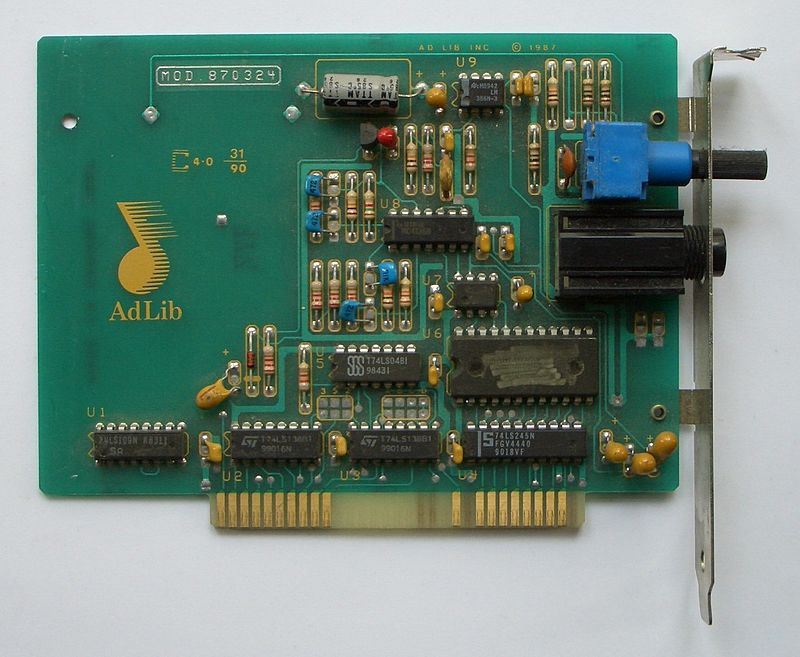

1972
Sherwin Gooch invented what is considered to be the first sound card which is the Gooch Synthetic Woodwind, used by PLATO terminals. It was a synthesizer capable of 4-voice music synthesis.

A sound card (also known as an audio card) is an internal expansion card that provides input and output of audio signals to and from a computer under control of computer programs. The functions of sound cards include providing the audio component for multimedia applications such as music composition, editing video or audio, presentation, education and entertainment (games) and video projection. Sound cards are also used for computer-based communication such as voice over IP and teleconferencing.
| Component name | Functionality |
|---|---|
| Digital Signal Processor(DSP) |
|
| digital to analog converter(DAC) |
|
| Analog to Digital converter(ADC) |
|
Sherwin Gooch invented what is considered to be the first sound card which is the Gooch Synthetic Woodwind, used by PLATO terminals. It was a synthesizer capable of 4-voice music synthesis.
The Apple II computer was capable of using plug-in sound cards. The Apple Music Synthesizer was the first plug-in sound card used by the Apple II, developed by ALF Products Inc. in 1978.
AdLib was one of the first companies to manufacture sound cards for the IBM PC. AdLib developed the Music Synthesizer Card in 1987, basing it on the Yamaha YM3812 sound chip.
The first Sound Blaster sound card created was the Creative Music System.It gave the computer a voice it never had, though not even close to the audio fidelity today.
Sound Blaster 1.0 was released, bringing recording functionality to PCs. It became one of the top-selling sound cards for PCs. The inclusion of the game port in a sound card was something that had never been done before. It allowed users to connect additional peripherals via the Sound Blaster sound card. Following subsequent revisions, higher sampling rates and capabilities were brought into the market.
Read the article to the right to learn more about the history of Sound Blaster.